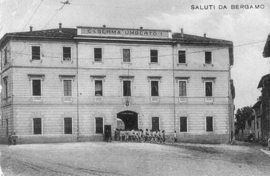

Historical Context
We are in front of the Montelungo Barracks in Bergamo, a military garrison that during the Italian Social Republic (1943-1945) became one of the operational centers of the National Republican Guard (GNR)
National Republican Guard (GNR)
What it was: The main police force of the Italian Social Republic (RSI, 1943-1945).
Tasks: Territorial control, anti-partisan repression, arrests of opponents, Jews, and draft evaders.
In Bergamo: The Provincial Command was headquartered right in the Montelungo Barracks, from where arrests and interrogations originated.
End: It dissolved with the collapse of the RSI in April 1945.
and, as sources testify, one of the places of confinement and interrogation for captured anti-fascists, partisans, and opponents. In a city where popular support for the Resistance could be "tacit complicity, often of open favor," places like this barracks represented the repressive apparatus of the Fascist Salò State. Those arrested for subversive activities, such as participation in the general strikes of March 1944 – a massive workers' mobilization that marked the resurgence of popular protagonism – were brought here before being transferred to prisons like Sant'Agata or, often, sent on to deportation to Nazi concentration camps.
Why it is a Place of Memory
The Montelungo Barracks is a fundamental place of memory because it materializes the mechanism of political repression and the passage from civil struggle to the tragedy of deportation. Symbolically, it connects the collective choices of resistance – such as the strikes, experienced sometimes with "blessed unawareness" – to the machinery of arrest, interrogation, and subsequent deportation to the camps. Many of the prisoners who passed through here were then transferred to the Grumellina Sorting Camp, the last Bergamo stop before deportation to Nazi concentration camps. Remembering this place means recognizing that the deprivation of freedom and institutional violence often started from ordinary buildings in the heart of cities. Today, in an era where democratic rights should not be taken for granted, this site compels us to remember the price of freedom and the courage of those who, even in the face of the brutality of prison and the threat of deportation, maintained their dignity and rejection of dictatorship.
Grumellina Sorting Camp
During World War II, at Grumellina (Grumello al Piano), Prisoner of War Camp No. 62 was established for prisoners of war and military internees.
Thousands of men of various nationalities lived here in difficult conditions. Today it is a place of memory that recalls the suffering of the prisoners and the stories of solidarity from the local population.
Multimedia Content


Bibliographic Sources
- Streikertransport; Political Deportation in the Industrial Area of Sesto San Giovanni (Giuseppe Valota, 2007)
- La resistenza in Italia (Santo Peli, 2004) - The Resistance in Italy
- Itinerari di memoria (Mario Pelliccioli, 2023) - Memory Itineraries
Web Sources
- Image 1: ISREC BG
- Image 2: Gruppo Vitali